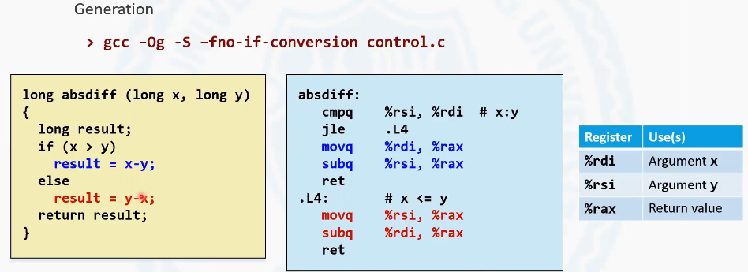

3.6.5 使用跳转指令实现条件分支
这节探讨C语言if else 语句在使用汇编指令表示是采用什么样的方式去表示

这有一个c 源的代码片段, 它定义了一个函数。这个函数的目标是计算了x 减y 的绝对值, 传入了两个参数x 和y , 如果x 大于y, 就用x 减去y , 否则就用y 减去x 。其实就是去算x 减y 的绝对值, 这样的一个程序，我们通过上面的这样一个指令，把它翻译成汇编指令。
1 | gcc -0g -S -fno-if-conversion control.c |